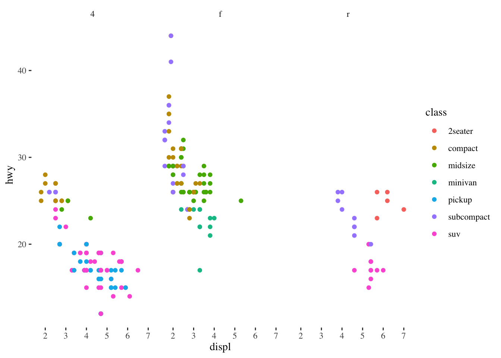

rstudio::conf2020: Super tips, super lessons, and super powers from R super users
Functions for rstudio::conf2020
Packages for rstudio::conf2020
Agenda
Notes from the in San Francisco on Jan 29-30, 2020
Things to add
- http://www.rebeccabarter.com/blog/2020-02-05_rstudio_conf/
- joe cheng css and bootstrap
- ryan tiempe using multiple packages - dewey and ggplot - tina cormier and spatial data? - pins package
- xgb package (training/ML)
- Link to rconf recorded talks
Weren't able to attend the conference? Fear not. The R community is sharing their talk and workshop slides. Thanks to Emil Hvitfeldt for collating everything.

Super useful and futuristic R tips and tricks
Below are some useful tips and tricks I gleaned from presentations at the conference. It's a mix of tidyverse titbits for making workflow easier and future R development geared toward applied things like user experience and interactive apps, which is where R, science communication, and data analysis/viz is already deeply entrenched.
These examples were presented by super R users at the conference. I had to share some to show you how to bend R to your will to do equal parts good and evil. Links to presenters included if you want further info.
Pre installation notes
Some packages may require installation from remote sources, such as Github, to which you'll need to prepare your comp with a software package downloader. Below is the quick and nasty way and more details can be found here.
For Mac, the software package compiler is called Xcode Command Line Tools. First, download it using the Terminal/command line:
xcode-select --installThen check you have everything set up in R by running the below command in R. You should then see the below confirmation.
devtools::has_devel()Your system should now be ready to download open source, in-development packages and package binaries.
May run into this issue for Mac OSX Mojave: https://forums.developer.apple.com/thread/104296#317543
Plotting
Use user-defined variables in your ggplot
- dewey and ggplot
This throws an error because ggplot can't recognise the character string.
require(ggplot2)
my_theme <- theme_classic()
colour_var <- "class"
facet_var <- "drv"
ggplot(mpg) + geom_point(aes(displ, hwy, colour = colour_var)) + facet_wrap(vars(facet_var)) + my_themePlacing .data in front of your variables and wrapping them with double square braces '[[]]' solves this.
require(ggplot2)
colour_var <- "class"
facet_var <- "drv"
ggplot(mpg) + geom_point(aes(displ, hwy, colour = .data[[colour_var]])) + facet_wrap(vars(.data[[facet_var]])) +
my_theme
More advanced stuff
Integrating css and bootstrap